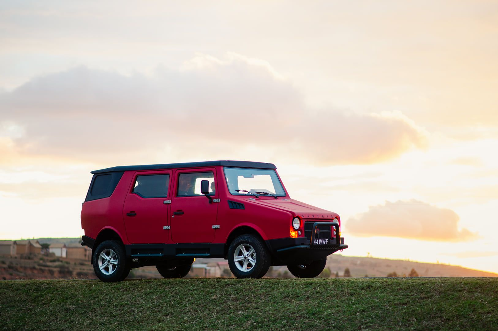
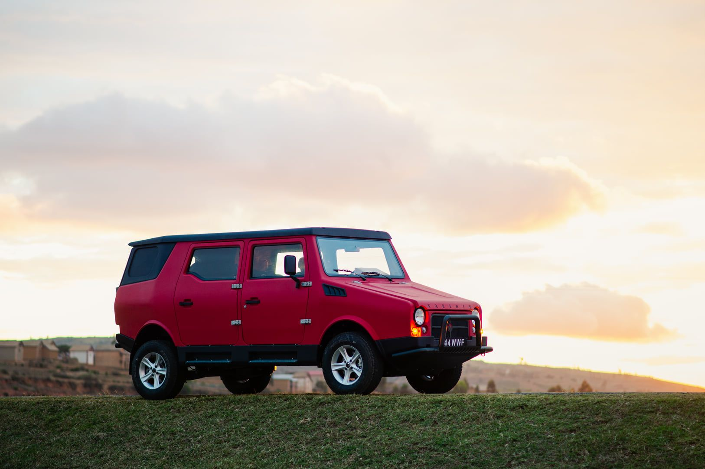

Le Relais is a social company whose goal is to take people out of misery by offering them a job and a salary, but trusting them with responsibilities and understanding their need. It has been know in Europe for collecting second-hand cloth, and hiring the people to sort, fix and sell the used cloths. This virtuous entreprise help giving a second life to cloth, preventigng tons of waste every year, as well as taking thousands of people out of employment.
In Madagascar, Le Relais started its devlopment in 2008, initially only with a cloth upcycling activity. However, the poverty and the challenges people face everyday pushed the company to expand, diversify, in order to make the city of Fianarantsoa a better place, as well as hiring as many employees as possible. They developped a rice production activity, data labelling, trash collection and treatment and, they aslo made the first African car brand: the KARENJY.
The story behing the creation of this car is quite epic and I'd love to tell you more in person ! Le Relais has been desiging and building a 4x4 car, made for the Malagasy roads, and by the Malagasy people, with their entire production process being in house, in 1 building in Fianarantsoa. They often need some exeternal help for specific projects, and that's why I decided to take 6 month to discover what was happening in this great company and help as much as I could.
My first poject was with the maintenance team. The team was made of 5 great mechanics, who knew how to fix anything and who really helped me feel at home with them, by teaching me the language, giding me through this culture and became my friends. The team was facing a lot of corrective maintenance and had no tool to plan ahead and switch to preventive maintenance. In about 2 month, I worked with them to review all the machine park, list every single action item, consumable, spare parts and tool and build an autonomous preventive maintenance planner using a free verison of Excel. That way, they could see every day all the necessary tasks, and pro-actively check the machine in order to prevent corrective maintenance. I coded all the planner in VBA, learning on the way, and I make sure to code with them, get their feedback on every details, so that they would feel like it's their own tool and that they build it by themselves. That way, they naturally used it and it helped reduce the corrective maintenace by 40%, over the 6 months I worked there.
Another project I led was about the composite material issue that the door team was facing. Basically, the door fabrication process only created smooth surfaces on one side of the composite material, which mde the internal window opening fixtures to jam over time with vibrations. As no reference plans were used to attached the window mechanism, teh team had to manually align all the parts with spacers, and those fixture would eventually loosen over time. I re-thought the composit molds to allow for some reference surfaces inside of the door, and that fixed their issue, as well as saving a tremendous assembly time.
Finally, another project was about the fire safety. Madagascar equivalent for PG&E, the Jirama, is know to be unreliable and cannot be trusted with water pressure. However, the entire fire saftely feature of teh building were reliang solely on that, causing a huge risk in case of fire. So I rethought the fire safety procedure at Le Relais, checking and loading all the expired extinguishers, installing fire balls in critical electrical cabinets and designed a new water system to pressurize the hoses. I mapped the entire building, calculating where to place the hoses and how much pressure would be necessary to reach every single point. After sizing a new pump, fixing a water storage of 500L at 6 meters of elevations, calculating of the pipe losses and connecting it altogether. We had functional hoses on my last day, with a continuous flow, with a 18m water jet, for 10 mins, while the firefighters would arrive.
This incredible adventure of course went far above the engineering help and designs, but I'll finish it here for my protfolio and I'd be more than happy to share more in person.